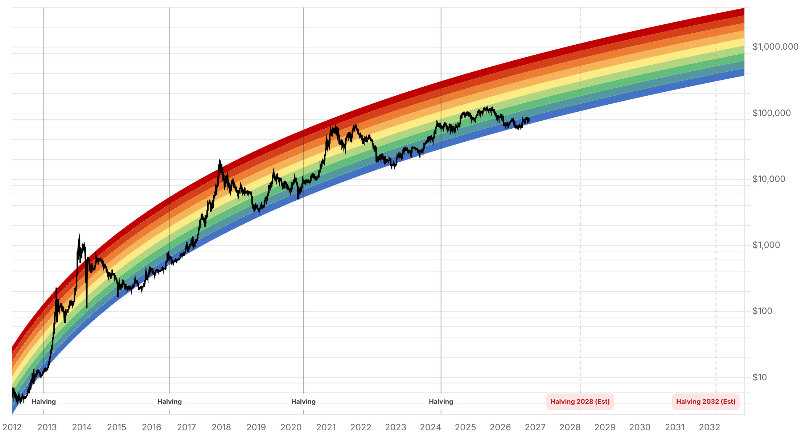

Reporte financiero
BTC cotiza en USD 76.486,11 en vivo (07:15 UTC), con una leve caída intradía (-0,26%) pero una baja más marcada frente al cierre de ayer (USD 78.248,45, -2,25%), revirtiendo la recuperación de los dos días previos y acercándose de nuevo al mínimo del 30 de octubre (USD 77.198,21), quedando incluso algo por debajo. Lo nuevo desde el reporte de ayer: el Fear & Greed Index retrocedió bruscamente de 37 a 26 -cortando en seco la racha de tres días de mejora (30→34→37)- y volviendo a una zona de Fear más profunda. Un artículo del 2 de noviembre (CoinGabbar, con precios de CoinGecko) identificó varios factores de presión simultáneos sobre el sentimiento, ninguno catastrófico por sí solo: (1) una vulnerabilidad de seguridad en BTCPay Server, corregida de urgencia en la versión 2.4.7, que afecta a instancias con la versión 2.4.1 o anteriores -BTCPay aclaró que 'no hay reportes creíbles de vaciado de hot wallets en el build 2.4.7 más reciente'-; (2) una resolución del Quinto Pleno del Comité Central del Partido Comunista de China (20º, reunido el 29 de octubre) que llama a combatir la corrupción vinculada a monedas virtuales y blockchain, leída por el mercado como señal de mayor control sobre flujos de capital ligados a cripto; (3) movimiento de fondos del hackeo de Binance en la red Tron -el analista on-chain SomaXBT identificó que el atacante trasladó ~USD 242M de los ~USD 628M robados originalmente en esa red en un lapso de dos días, aunque Tether ya había congelado ~USD 378,7M de esos fondos-; y (4) venta de una ballena de Solana que depositó 1,49M SOL (~USD 148,8M) en exchanges en los últimos diez días, un patrón que suele preceder ventas (Lookonchain). Ninguno de estos factores por sí solo explica una caída mayor, y de hecho BTC/ETH se mantuvieron relativamente estables el 2 de noviembre según esa misma nota, pero en conjunto parecen haber erosionado el sentimiento hacia hoy. Sin novedades verificadas desde ayer en la regla de MSCI sobre Strategy (la decisión sigue pendiente para el 11 de noviembre, con entrada en vigor el 30 de noviembre, sin información nueva que determine el resultado), en la Clarity Act (sigue estancada sin votación de piso confirmada), en la apelación del fallo del Reino Unido sobre los 61.000 BTC, en la respuesta de Cantor Fitzgerald al senador Blumenthal, ni en el porcentaje de cobertura del hackeo original de Binance (se mantiene en el 95% confirmado el 1 de noviembre, sin actualización encontrada hoy) o en el estado de los retiros (sin reportes de nueva congestión desde la reapertura del 1 de noviembre en 15 redes). Se omiten nuevamente cifras de flujos semanales de ETFs de Bitcoin por falta de un dato específico y confiable para la semana en curso.
A diferencia de los tres días previos, en que el índice de sentimiento mejoraba de forma sostenida (30 el 31-oct → 34 el 1-nov → 37 el 2-nov), hoy cae 11 puntos de un salto a 26, de vuelta a una lectura de Fear más profunda. El precio de BTC acompaña el giro: tras cerrar el 1 de noviembre en USD 78.248,45 y el 2 de noviembre en USD 76.677,30, hoy cotiza en vivo a USD 76.486,11, es decir una baja acumulada de ~2,25% desde el cierre de ayer, aunque la variación intradía de hoy es moderada (-0,26%). El nivel actual queda prácticamente a la par del mínimo del 30 de octubre (USD 77.198,21), por debajo de él.
Una nota de CoinGabbar del 2 de noviembre, basada en datos de CoinGecko, atribuye la caída de sentimiento (no tanto de precio en ese momento) a una combinación de factores: (1) BTCPay Server lanzó de urgencia la versión 2.4.7, que corrige una vulnerabilidad crítica y varias de severidad media; el vector de ataque afecta a instancias con la versión 2.4.1 o anteriores, y el equipo de BTCPay declaró que 'there are no credible reports of hot wallet drains on the latest 2.4.7 build' ('no hay reportes creíbles de vaciado de hot wallets en el build 2.4.7 más reciente'); (2) el Quinto Pleno del Comité Central del 20º Partido Comunista de China, reunido el 29 de octubre, aprobó una resolución que llama a combatir la corrupción vinculada a monedas virtuales y blockchain, leída por operadores como una señal de mayor escrutinio sobre flujos de capital relacionados con cripto; (3) el analista on-chain SomaXBT identificó movimiento de fondos del hackeo de Binance originado en la red Tron -de los ~USD 628M robados originalmente en esa cadena (principalmente USDT), el atacante trasladó ~USD 242M en un lapso de dos días, aunque Tether ya había congelado ~USD 378,7M de esos fondos previamente-; y (4) datos de Lookonchain muestran que una billetera depositó 1,49M SOL (~USD 148,8M) en exchanges a lo largo de diez días, un patrón que suele anticipar ventas. La propia nota señala que BTC y ETH se mantuvieron relativamente estables el 2 de noviembre (USD 77.837,74 y USD 2.283,11 respectivamente, según CoinGecko), por lo que atribuye el impacto principalmente a sentimiento y a caídas más marcadas en altcoins de capitalización chica (Dessa -41,6%, Akedo -34,0%, Janction -21,2% en 24h) más que a un evento catastrófico único. Fuente: CoinGabbar (2-nov-2026), citando a BTCPay Server, Xinhua/Wu Blockchain, SomaXBT, Lookonchain y CoinGecko.
La decisión de MSCI sobre si excluir a Strategy de sus índices sigue pendiente para el 11 de noviembre (entrada en vigor tras el cierre del 30 de noviembre); no se encontró información nueva que adelante el resultado, y una búsqueda específica solo devolvió coberturas de un episodio distinto de enero de 2026 (cuando MSCI decidió no excluir a las empresas de tesorería de bitcoin 'por ahora'), que no aplica al proceso actual. Tampoco hay novedades en la Clarity Act, en la apelación del fallo del Reino Unido sobre los 61.000 BTC, ni en la respuesta de Cantor Fitzgerald al requerimiento del senador Blumenthal sobre sus vínculos con Tether. Sobre el hackeo de Binance, no se encontró una actualización posterior al 1 de noviembre: la cobertura de fondos sigue en el 95% confirmado ese día y no se hallaron reportes de nueva congestión en los retiros desde la reapertura escalonada en 15 redes.
| Periodo | Valor |
|---|---|
| 28 oct | 81267.59 |
| 29 oct | 77775.11 |
| 30 oct | 77198.21 |
| 31 oct | 77434.75 |
| 1 nov | 78248.45 |
| 2 nov | 76677.3 |
| 3 nov (en vivo) | 76486.11 |
| Periodo | Valor |
|---|---|
| Hoy | 26 |

“There are no credible reports of hot wallet drains on the latest 2.4.7 build.”
El retroceso del Fear & Greed Index (37→26) y la baja de ~2,25% desde el cierre de ayer sugieren que el mercado está digitando varios factores de riesgo de baja intensidad a la vez -la vulnerabilidad de BTCPay Server, la señal regulatoria de China, el movimiento de fondos del hackeo de Binance en Tron y la venta de la ballena de Solana- más que reaccionando a un evento único y catastrófico. El dato a vigilar en los próximos días es si el BTCPay Server 2.4.7 contiene efectivamente el riesgo de explotación (la propia BTCPay no reporta drenajes confirmados hasta ahora) y si la venta de la ballena de Solana se traduce en presión vendedora visible en el mercado spot.
Sin cambios desde ayer: la regla de MSCI sobre Strategy (vigente desde el 30 de noviembre, lista final el 11 de noviembre) sigue como el principal frente de riesgo pendiente para MSTR como proxy de Bitcoin. La resolución del Quinto Pleno del PCCh contra la corrupción vinculada a cripto es un dato nuevo a monitorear en las próximas semanas por si deriva en medidas regulatorias concretas sobre flujos desde o hacia China, más allá de la retórica.
Sin cambios en los objetivos de precio de largo plazo ya reportados en ediciones anteriores (Citigroup, Bernstein, Standard Chartered, Tom Lee, NYDIG, Armstrong). La resolución del hackeo de Binance sigue sin nuevas novedades negativas (95% de cobertura, retiros operativos en 15 redes sin reportes de nueva congestión), por lo que el riesgo reputacional de corto plazo para la infraestructura de exchanges centralizados no empeoró desde ayer, aunque el movimiento de fondos del atacante en Tron confirma que una porción de lo robado sigue en manos del hacker y en movimiento.
La vulnerabilidad crítica corregida en la versión 2.4.7 afecta a instancias con la versión 2.4.1 o anteriores. Aunque BTCPay no reporta drenajes confirmados hasta ahora, quienes operen o dependan de instancias de BTCPay Server deberían confirmar que están en la versión parcheada.
El traslado de ~USD 242M por parte del atacante dentro de la red Tron es movimiento de fondos ya robados, no una nueva salida de capital de Binance. Vigilar si Tether logra congelar una porción mayor de esos fondos en movimiento en los próximos días.
Sin novedades desde ayer, pero la fecha se acerca: la confirmación o no de la exclusión de Strategy de los índices de MSCI sigue siendo un riesgo específico para quienes tengan exposición a MSTR como proxy de Bitcoin, independiente del precio de BTC en sí.